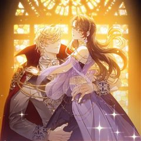
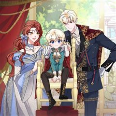
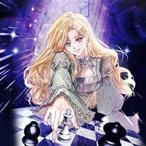

누군가 내 몸에 빙의했다 같은 웹툰 추천

누군가 내 몸에 빙의했다 · 탐성 / KALTA / 쌀밥 / 89 / 신솔라
누군가 내 몸에 빙의했다 재밌게 봤다면 이 웹툰들도 좋아할 거예요. 같은 장르이면서 고자극드라마, 서스펜스, 로판 같은 요소가 겹치는 작품을, 겹치는 요소가 많은 순서로 20개 골랐어요.
2026-10-04 기준 · 네이버웹툰·카카오웹툰·레진코믹스 · 성인 작품 제외
내 취향으로 직접 골라 추천받기 →-
1
 카카오웹툰
카카오웹툰악역의 엔딩은 죽음뿐
역하렘 공략 게임의 악역, 에카르트 공작가의 하나뿐인 공녀이자 입양아 페넬로페로 빙의했다. 그런데 하필 난이도는 극악! 뭘 해도 엔딩은 죽음뿐! ‘진짜 공녀’가 나타나기 전에 여주의 어장 중 한 명을 공략해서 살아남아야 한다. 사사건건 시비를 거는…
서스펜스로판판타지로맨스카카오웹툰에서 보기 → · 악역의 엔딩은 죽음뿐 같은 웹툰 → -
2
 카카오웹툰
카카오웹툰S급 헌터는 악역 공녀가 되기 싫습니다
김이영, 그녀는 대한민국의 평범한 공무원 시험 응시생이었다. 그것도 4년 반이 넘는 긴 시간동안 공부 끝에 합격한, 낙이라고는 짬짬이 소설읽는 것밖에 없는 정말 평범한 사람. 그러나 합격을 축하하기 위해 외식을 나간 날 교통사고를 당해 죽고, 자신이…
서스펜스로판판타지로맨스카카오웹툰에서 보기 → -
3
 카카오웹툰
카카오웹툰악당만 취급합니다
‘내 직업은 치료사가 아니란 말이다!’ 2년 전. 집 앞에 쓰러진 환자를 치료하고 나서부터 환자들이 줄줄이 쌓인다. 불법 보석 세공사이자 보석술사인 시링크스는 이번에도 자신의 문 앞에 널브러진 환자를 확인하는데... 이 남자는... 소설 속 최고의…
서스펜스로판판타지로맨스카카오웹툰에서 보기 → -
4
 카카오웹툰
카카오웹툰남편의 말대로 정부를 들였다
' “기억하지 루이제? 내 사생활에 참견하는 순간 이 결혼은 끝이야. 그걸 받아들인 건 당신이고.” 결혼 기간 약 3년. 끊이지 않고 바람을 피우는 남편에게 지친 어느 날, 남편이 정부를 들이라고 했다. 그의 말대로 정부를 구해보려고 뒷골목에서 가장…
서스펜스로판판타지로맨스카카오웹툰에서 보기 → -
5
 카카오웹툰
카카오웹툰악마의 주인님이 되어버렸다
피폐소설 속 남주를 흑화하게 만든 악녀로 빙의했다. 이미 N번의 빙의를 말아먹었던 나는 결심했다. 지하실에 갇힌 남주를 구하고 탈출하겠다고. “내가 지켜줄게." 드디어 남주의 정체가 밝혀지고 해피엔딩이 눈앞이었다. 학대는 무슨, 손수 먹이고 입혀 가…
서스펜스로판판타지로맨스카카오웹툰에서 보기 → -
6
 카카오웹툰
카카오웹툰집 잘못 찾아오셨어요, 악역님
아무래도 나는 이웃집의 사연 많은 엑스트라인 모양이다. 원작의 전개대로라면 이제 여주인공이 치명상을 입고 쓰러진 악역을 구해주고 그 대가로 미남 악역의 광적인 집착을 받아야 했다. 그런데 어째서인지 악역 서브남이 내 집 앞에 기절해 있는 것이 아닌가…
서스펜스로판판타지로맨스카카오웹툰에서 보기 → -
7
 카카오웹툰
카카오웹툰망겜 속에 갇혔다
평소와 다를 바 없이 평범한 일상을 보내는 도버 마을 약재상 【샤리 아즈라엘】 그러던 어느 날, 자신이 사실 망겜 속 NPC에 빙의되어 2년 동안 게임에 갇혀 있었다는 사실을 불현듯 깨닫고 만다. 만약 게임에서 나가지 못한다면 "VR 게임을 하던 2…
서스펜스로판판타지로맨스카카오웹툰에서 보기 → -
8
 카카오웹툰
카카오웹툰제국의 시녀
'흔해 빠진 외모, 자작가의 사생아.' 내세울 만한 배경은 없지만 비상한 머리 덕에 시녀의 신분으로 권세를 손에 쥔 레오나. 하지만 영원불멸할 줄 알았던 제국이 적의 침공에 무너진 순간, 그녀 역시 적병의 칼에 죽음을 맞이한다. 욕심 때문에 남을 해…
서스펜스로판판타지로맨스카카오웹툰에서 보기 → -
9
 카카오웹툰
카카오웹툰공작가의 흑막 영애님
공작가의 사생아로 태어나 제국의 성녀가 된 에스텔레. 일평생 주변 이들을 사랑하려 노력했으나, 배신당해 악마에게 제물로 바쳐져 지옥에서 600년간 고통을 받았다. [복수할래?] [네가 원한다면, 저들이 가장 찬란히 빛나는 순간으로 보내줄게. 어때?]…
서스펜스로판판타지로맨스카카오웹툰에서 보기 → -
10

카카오웹툰폐하, 이제 그만
발데크 제국의 이교도 노예 ‘샤란’. 그녀는 매일 밤 꿈 속에서 잠들지 못한 채 배회하는 한 남자의 환영을 본다. 환영의 정체는 바로 발데크 제국의 황제인 ‘율리언’. 그는 흑주술로 인한 저주로 심각한 불면증을 앓고 있었고, 샤란은 율리언의 불면증을…
서스펜스로판판타지로맨스카카오웹툰에서 보기 → -
11
 카카오웹툰
카카오웹툰남주를 죽여보겠습니다
로판 소설을 읽고 몸이 아파오던 나 권진하. 여주인공 엘비가 느끼는 감정과 감각이 모두 연결되어버렸다. 끔찍한 통증과 슬픔에 병원까지 찾아갔지만 몸에는 이상무. 결국 소설 작가에게 메일을 보냈다. 제발 쓰레기 남주가 여주 좀 그만 괴롭히게. 하지만…
서스펜스로판판타지로맨스카카오웹툰에서 보기 → -
12

카카오웹툰내 아이가 분명해
환생 트럭에 치어 남작가의 장녀로 다시 태어난 클레어 델포드. 어느 날 제국 3대 명문가 중 하나라는 공작님과 실수를 저지르고 말았다. 뭐 좋다. 있을 수 있는 일이다. 실수는 피장파장, 꿀릴 게 없었다. 하지만 그날 여동생이 위험한 일에 휘말렸다.…
서스펜스로판판타지로맨스카카오웹툰에서 보기 → -
13
 카카오웹툰
카카오웹툰죽여도 될까요, 폐하
황위를 노리는 황자 때문에 죽고, 자그마치 회귀 4회차째. 또 죽을 순 없다. 황자를……. 꼬셔보자! *** “다시 말해 봐. 그때 했던 얘기.” 빨간 피를 뒤집어쓴 카스티안이 에아렌델을 바라보며 말했다. “나를 좋아한다고. 진심이라고. 네가 그랬잖…
서스펜스로판판타지로맨스카카오웹툰에서 보기 → -
14
 카카오웹툰
카카오웹툰악녀가 될 수밖에 없는 이유
희대의 미친년으로 불리는 악역으로 환생한 나. 하지만 나는 환호했다. 왜냐하면 악녀 르네 블레어는 돈이 많았으니까! 비록 작품 초반에 죽지만 아무렴 어때, 나쁜 짓은 그만두고, 앞으로 모두에게 잘하는 거야. 혹시 알아? 갑자기 돌변하면 흔한 악녀 빙…
서스펜스로판판타지로맨스카카오웹툰에서 보기 → -
15카카오웹툰
깨진 유리 구두의 조각
모두에게 사랑받는 의붓동생 로에나. 그녀를 증오한 새 언니 시스에. "로에나. 난 네가 정말 싫어." 모든 것을 잃은 시스에는 그 말을 남기고 로에나의 눈앞에서 삶을 끝마친다. 분명 그랬는데.… “로에나라고 해요. 이제 우리는 가족이 되는 건가요?”…
서스펜스로판판타지로맨스카카오웹툰에서 보기 → -
16
 카카오웹툰
카카오웹툰네 목을 비트는 새벽
[사랑이라 믿었다. 그가 내 심장을 꿰뚫기 전까지는.] 노예인 어미의 피를 이어받았다는 이유로 누구에게도 존중받지 못했던 왕국의 공주, 아르시노에. 그녀는 제국의 황태자 알레한드로와의 결혼으로 인생이 달라질 거라 믿었다. 사랑받는 아내로, 존경받는…
서스펜스로판판타지로맨스카카오웹툰에서 보기 → -
17

카카오웹툰복수는 이렇게 하는 거다
부모를 잃고 가문마저 빼앗긴 소녀 그레이스. 13년이라는 시간 동안 그녀가 가슴 안에 품은 건 오로지 복수 하나뿐이었다. 그리고 같은 원수에게 모든 것을 잃은 아레스. 복수를 위해 그레이스는 그에게 위장 연애를 제안하고, 두 사람은 차가운 계약을 맺…
서스펜스로판판타지로맨스카카오웹툰에서 보기 → -
18카카오웹툰
조신한 남편의 결혼 목적이 수상하다
과로사할 캐릭터에 빙의했지만, 운명을 거부한 채 퇴사하고 길드를 꾸려 자리 잡은 헤이젤 러브. 거기다 잘생기고, 요리 잘하고, 다정하고 조신한. 하지만 밤에는 거친 완벽한 이상형과 결혼까지! 성공한 삶…이었다. 그의 정체를 알기 전까진. 그의 진짜…
서스펜스로판판타지로맨스카카오웹툰에서 보기 → -
19
 카카오웹툰
카카오웹툰악역을 위한 메르헨
동화 ‘인어공주’ 속 왕자와 결혼하는 이웃 나라 공주, 이자벨에 빙의했다. 그런데 단순한 조연인 줄 알았던 공주가 대륙에 소문이 자자한 악녀란다. 게다가 죽을 날을 받아둔 시한부인 것도 모자라 계속 살아난다. ‘사람 가지고 장난해? 아무리 신이 있다…
서스펜스로판판타지로맨스카카오웹툰에서 보기 → -
20카카오웹툰
나의 다정한 무뢰한에게
오직 공작가에 복수할 생각뿐이었던 서머, 원수의 막내아들에게 빠져 버렸다! 발로네크 공작가에 의해 동생을 잃은 그날, 서머의 세상은 완전히 무너져 버렸다. 살아남은 이유는 단 하나, 공작가에 복수하는 것. 그렇게 공작가에 복수를 다짐하던 서머는, 공…
서스펜스로판판타지로맨스카카오웹툰에서 보기 →